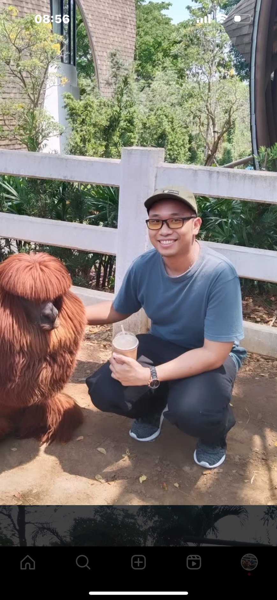

Patrapee Pongtana
Specialist Software Engineer & Solutions Architect
Software engineer with 6 years at Accenture, recently transitioning into solutions architecture. I started as a backend developer building microservices, then grew into leading code reviews, sprint planning, and mentoring junior developers. Now I bridge the gap between technical teams and clients—designing system architectures, establishing development standards, and presenting end-to-end integration solutions.
My Vision
My Ultimate Goal
As someone who majored in software engineering and now works in business consultation, I've developed a deep interest in applying practical technical solutions to real-world business challenges. My goal is to bridge the gap between complex technical implementations and clear, accessible communication—translating hard skills into soft skills that enable me to effectively present software architecture to both technical teams and non-technical stakeholders. I aspire to become a solutions architect who not only designs robust systems but also articulates the value and vision behind every architectural decision.
What I Believe
I believe in continuous self-growth and building a strong foundation of knowledge through deliberate learning. In today's digital age, virtually everything can be learned online—but I also recognize that validation and verification of that knowledge through hands-on experience is equally essential. I firmly believe that communication is the key to bridging the gap between practical technical solutions and their successful implementation in real-world scenarios. Clear, well-structured documentation is crucial when building any platform or infrastructure, as it ensures knowledge transfer, maintainability, and long-term success of any technical invention or system.
Working Collaboration
I've worked with small team (2-3 people) to big team (8-9 people) for backend development. I and the teams occasionally conduct retrospective for each project endings and received various feedback. My vision of team collaboration is based on a cleared and defined role description. If no establishment is declared at the beginning of the project, it could cause the double-work or redundant delivery, thus making the team morale decreases. So I like to do early establishment of the responsiblities early, and opened to feedback frequently throughout the software development life cycle.
Experience
Responsible AI - Tech Consultation
Provided the responsible AI solution to apply on agentic AI on various projects, including virtual assistant and software development life cycle. Constructed guideline and governance of AI usage within the enterprise, and presented the best fit and optimized agent model to the client.
Campaign Marketing Platform - Solution Architect
Gathered business and technical requirements from client and third party, and build solutions based on the requirements. Built an optimized and sustain solution in order to ensure secured network, low latency, and high availability.
Campaign Marketing Platform - Data Migration
Built scripts to migrate data from legacy system on AWS cloud. Using ETL tools such as Glue Job, Lambda, and Step Function from AWS to daily migrate millions of records across cold storage (S3 bucket) to a new platform. The design includes the high availability where there always 100% uptime of data inquiry while migration is happening, using the strategy of "Blue-Green Tables". The data validations and reconciles are applied between the legacy and the platform.
Payment Platform - Golang Development
Developed Golang microservices as a backend developer, and deployed them to the Google Cloud Plateform. Worked and collaborated with integrated team, such as mobile application channel and legacy payment system. Lead the backend deployment of a feature to production with the client.
Mobile Application Post Support Features - Kotlin Development
Enhanced and maintain existing codebase, and improved on bottleneck code such as sql statements, caching utilization, and deprecating unused API integration points. Support various teams on testing on the main feature, and built testing environment for testers.
Mobile Application Backend Development - Sub Lead Kotlin Development
Developed an E-wallet feature on an existing mobile application. Assisted a lead developer conduct code review within the team. Attended design review with project managers and proposed solutions from tech perspective.
Mobile Application Backend Development - Microservice Migration
Supported the client to migrate on-prem microservices to Google Cloud Platform. Implemented plans for migration with solution architect and executed the migration with DevOps. Handled the data migration in real-time with message queue and cache sync between on-prem and on-cloud.
Mobile Application Backend Development - Java Development
Built and deployed microservices on Google Cloud Platform. Utilized Confluence and Jira to build microservices per specifications given. Learned the software development life cycle process, and applied to sprint plan.